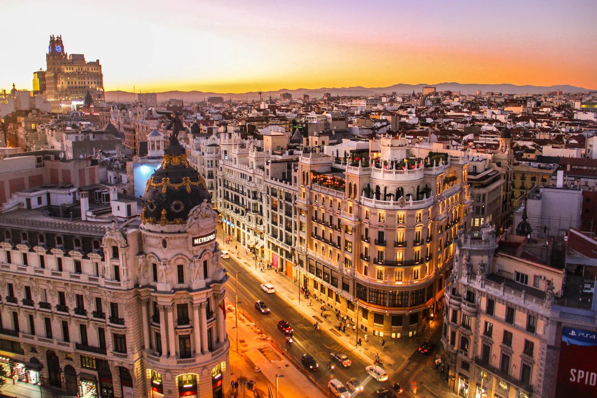

Από την ίδρυση της πόλης υπάρχουν λίγα στοιχεία, όπως λίγα απομεινάρια τειχών, ενώ τοποθετείται χρονικά γύρω στο 850 μ.Χ. με τους πρώτους κατοίκους να είναι μουσουλμάνοι. Τη θέση τους πήραν χριστιανοί, οι οποίοι κατέλαβαν το οχυρό και συγκατοίκησαν μαζί με τους μουσουλμάνους αρμονικά από τις αρχές του 11ου αιώνα. Πέρασαν αρκετοί αιώνες ώσπου η μικρή και ανίσχυρη πόλη να γίνει πρωτεύουσα της Ισπανικής Αυτοκρατορίας γύρω στα 1500 επί Φιλίππου Β΄ και έτσι να αρχίσει η ανάπτυξή της τόσο στην οικονομία όσο και στην αύξηση του πληθυσμού και τελικά να καταστεί μια από τις πιο ακμάζουσες πόλεις της Ευρώπης. Όμως, μια εξέγερση των κατοίκων στις 2 Μαΐου 1808 εναντίον των στρατευμάτων του Ναπολέοντα είχε καταστρεπτικές συνέπειες και οδήγησαν την πόλη σε ακόμη πιο δύσκολες συνθήκες από πριν. Κάθε χρόνο η πόλη γιορτάζει την ημέρα αυτή εις μνήμη της τότε εξέγερσης. Σημαντικό γεγονός στην ιστορική διαδρομή της πόλης αλλά και της χώρας γενικότερα ήταν η κατάληψη της πόλης από τον Φράνκο τον 20ο αιώνα, ο οποίος μαζί με τους εθνικιστές διατήρησαν την εξουσία από το 1939, ενώ ο θάνατος και του διαδόχου του τη δεκαετία του 1970 έδωσε τη δυνατότητα στους Ισπανούς να πραγματοποιήσουν τις πρώτες δημοκρατικές εκλογές.
Όσον αφορά τα μεταφορικά μέσα θα πρέπει να γνωρίζετε ότι το συγκοινωνιακό δίκτυο είναι εκτενές και ευκολόχρηστο καθώς περιλαμβάνει λεωφορεία, μετρό, προαστιακό αλλά και μηχανάκια και ποδήλατα στα οποία όμως πρέπει να βάζετε υποχρεωτικά κράνος. Επίσης μπορείτε να καλέσετε τηλεφωνικώς ή να σταματήσετε στο δρόμο ένα από τα λευκά με την κίτρινη λωρίδα ταξί ή ακόμη και να νοικιάσετε ένα αυτοκίνητο από τα διάφορα γραφεία ενοικιάσεως που θα βρείτε είτε στο αεροδρόμιο είτε σκορπισμένα στην πόλη. Τέλος, επιλέξτε για το κέντρο της πόλης το περπάτημα καθώς εδώ είναι δύσκολο να βρείτε πάρκινγκ ενώ με τα πόδια θα έχετε τη δυνατότητα να ανακαλύψετε κάθε πλευρά αυτής.
Οι υπήκοοι της Ελλάδος που θέλουν να ταξιδέψουν στην Ισπανία το μόνο που χρειάζονται είναι ταυτότητα ή διαβατήριο σε ισχύ και όχι βίζα, εάν η παραμονή τους είναι μέχρι 90 ημέρες. Παράλληλα μπορείτε να εισάγετε και να εξάγετε προϊόντα προσωπικής χρήσης χωρίς ιδιαίτερους περιορισμούς. Προετοιμάστε το ταξίδι σας αρκετό καιρό πριν ταξιδέψετε, έχοντας κάνει κράτηση στα εισιτήριά σας και στο ξενοδοχείο, το οποίο επιλέξτε καλύτερα να μην είναι στο κέντρο της πόλης καθώς η πολύ φασαρία θα σας κουράσει. Η προσαρμογή στην πόλη δεν θα είναι καθόλου δύσκολη κι αυτό γιατί οι χρηματικές σας συναλλαγές καθώς και οι μετακινήσεις θα είναι άνετες και εύκολες. Έτσι σχετικά με τα χρήματα, το νόμισμα είναι το ευρώ ενώ αν θελήσετε να χρησιμοποιήσετε την πιστωτική σας κάρτα μπορείτε να το κάνετε έχοντας υπ’ όψιν ότι οι πιο γνωστές του είδους γίνονται δεκτές. Παράλληλα σε ολόκληρη την πόλη θα βρείτε μηχανήματα ανάληψης χρημάτων (ΑΤΜ). Το να λάβετε τις απαραίτητες προφυλάξεις δεν είναι κακό, παρόλο που η Μαδρίτη είναι μια ασφαλής πόλη. Συχνά μικροαπατεώνες κυκλοφορούν εκεί όπου υπάρχει συνωστισμός από κόσμο και αρπάζουν πορτοφόλια ή τσάντες, γι’ αυτό αποφύγετε να αφήνετε τα πράγματά σας δεξιά κι αριστερά εκτεθειμένα. Αποφύγετε, επιπλέον, να κυκλοφορείτε στα πάρκα τη νύχτα αλλά και στις περιοχές γύρω από τη συνοικία Gran Via. Έχετε κατά νου ότι τα πρόστιμα στη Μαδρίτη στα μέσα μεταφοράς είναι συχνό φαινόμενο, γι’ αυτό όταν τα χρησιμοποιείτε να θυμάστε να ακυρώνετε τα εισιτήριά σας. Σχετικά με τα φιλοδωρήματα θα πρέπει να γνωρίζετε ότι στα εστιατόρια ανέρχεται στο 5% (προσοχή γιατί πολλές φορές αυτό περιλαμβάνεται στις αποδείξεις) ενώ οι οδηγοί ταξί περιμένουν ένα φιλοδώρημα 10% όταν οι αποστάσεις είναι μεγάλες. Βέβαια αυτό είναι στη δικιά σας κρίση εάν θα το δώσετε ή όχι. Εάν βρεθείτε σε δύσκολη θέση ή αντιμέτωποι με κάποιο επείγον περιστατικό καλέστε: Αστυνομία: 091, Ασθενοφόρο: 112

| Ημερομηνία | Μέρος | Πληροφορίες |
|---|---|---|
| 4-27 Δεκεμβρίου | Naves del Español en Matadero | Beethovenby Antonio Muñoz de Mesa |
| 5 Δεκεμβρίου | Nuevo Teatro Alcalá | The Physician, by Noah Gordon – The Musical |
| Σαββατοκύριακα μέχρι 29 Δεκεμβρίου | Gran Teatro Bankia Príncipe Pío | Whitney Houston Hologram Tour |
| 12 Δεκεμβρίου | Teatro Goya | Flamenco Piano by Pablo Rubén Maldonado |